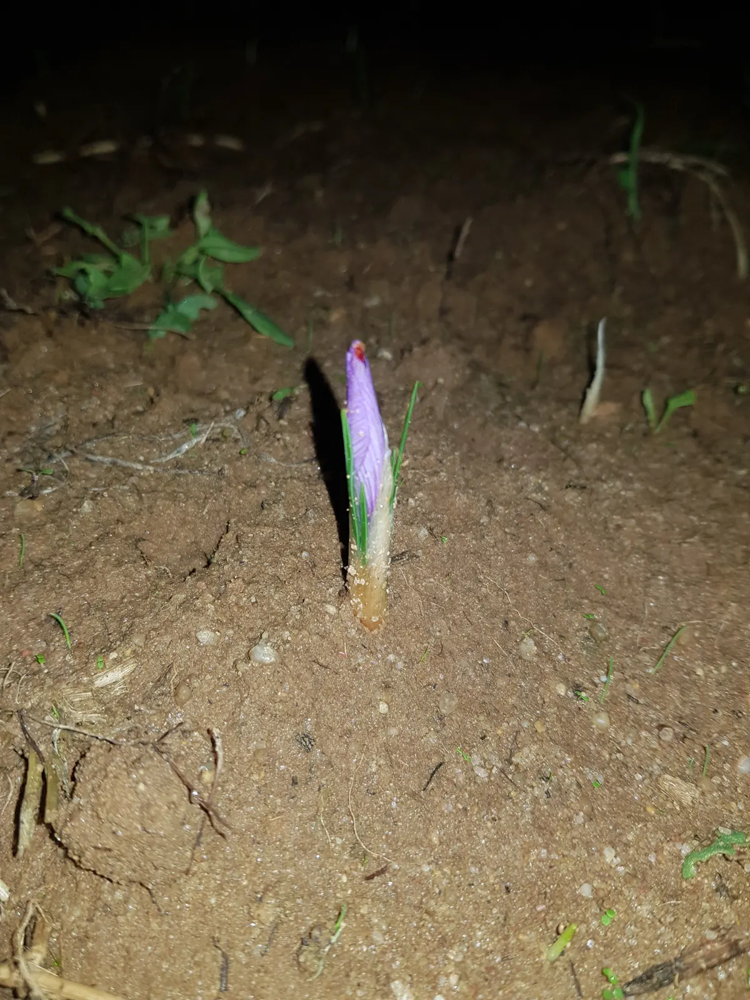
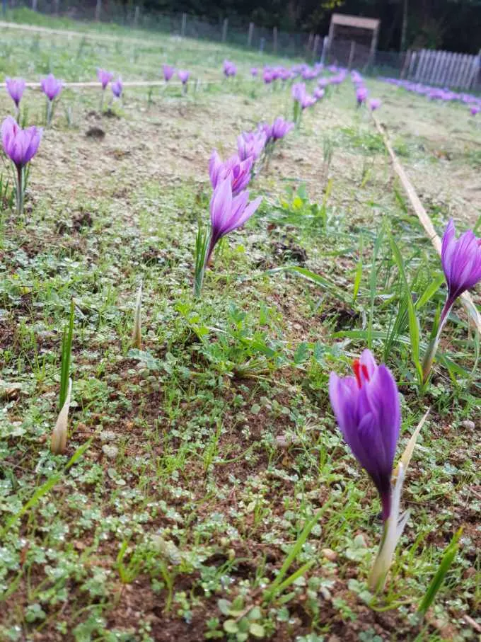
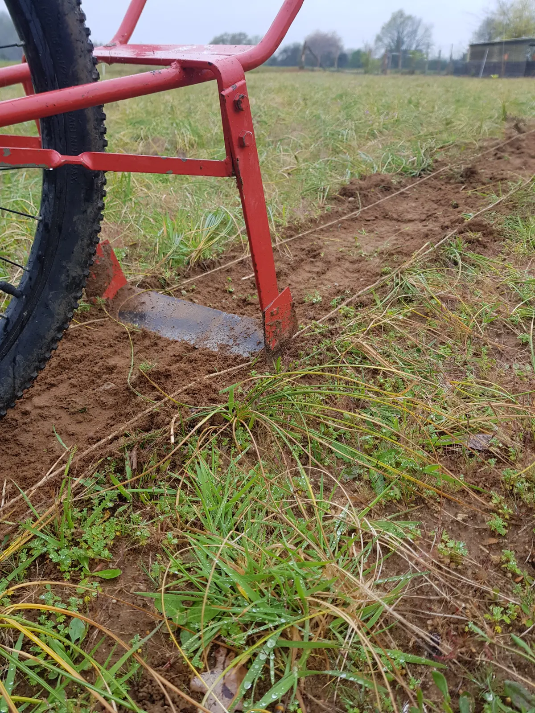
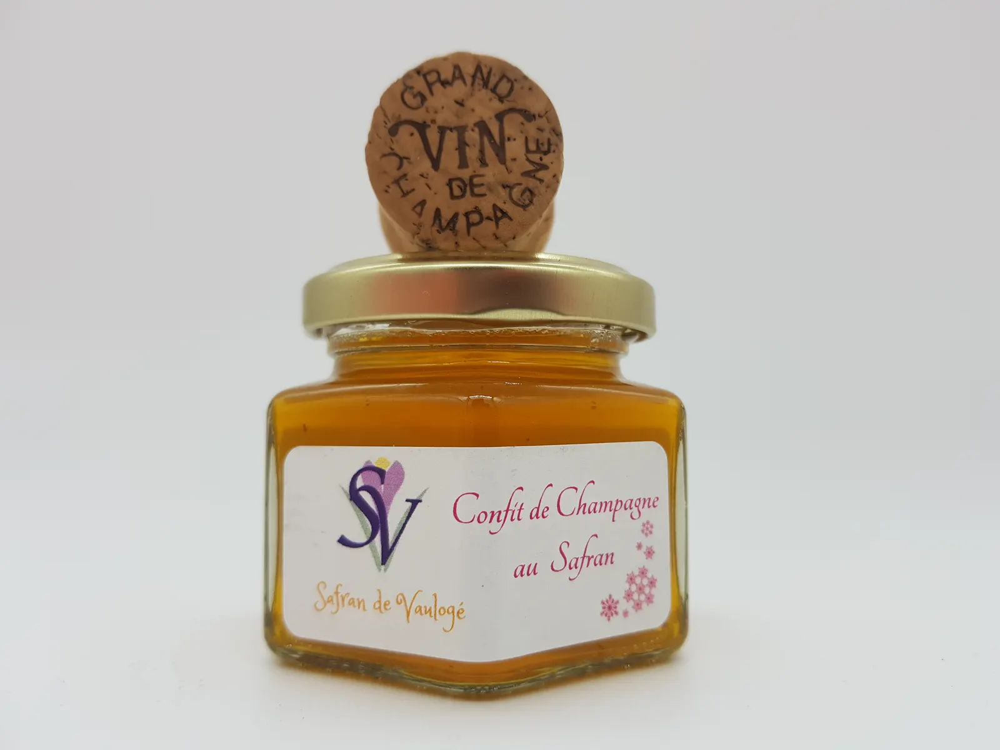
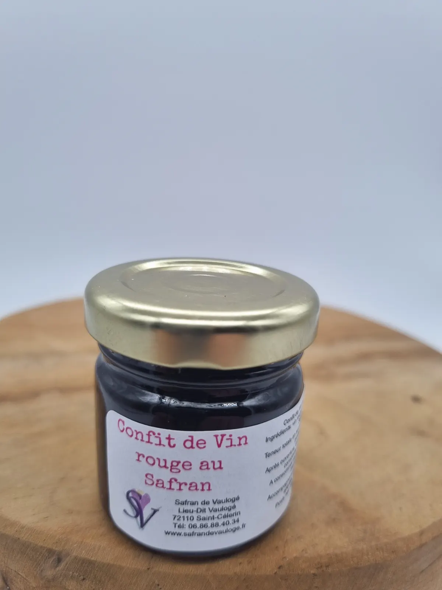
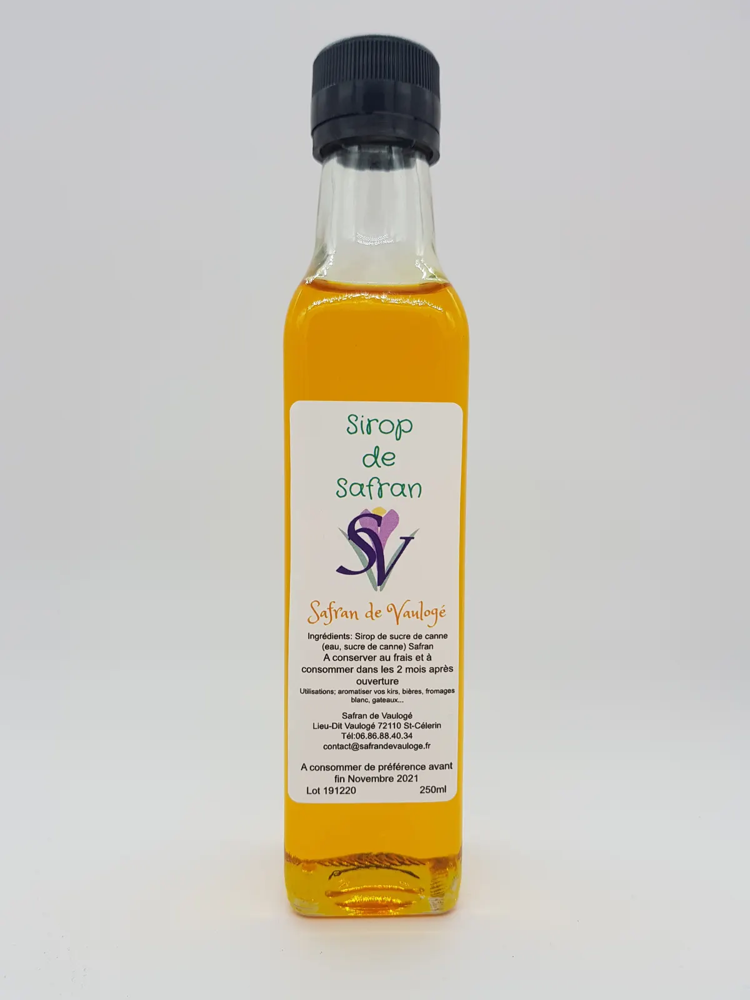
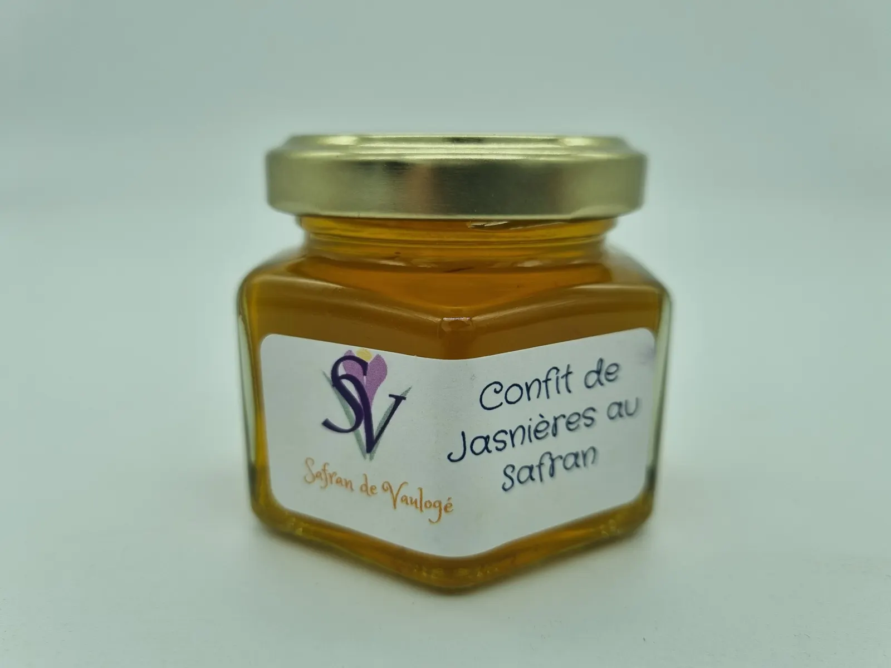

Du safran cultivé et récolté à la main à Saint-Célerin.
La safranière bénéficie d'une terre sablonneuse et drainante, condition essentielle au bon développement du bulbe de crocus sativus. Le désherbage est fait intégralement à la main ou à la houe maraîchère : aucun pesticide n'est utilisé sur nos parcelles.
Commandes préparées sous 48 h, retrait gratuit à Saint-Célerin.


- Sarthe (72)safranière basée à Saint-Célerin
- 2 parcellesla seconde à 15 km, même sol
- Aucun pesticidedésherbage à la main ou à la houe
- Catégorie 1à l'analyse en laboratoire
- 16 produitssur notre boutique en ligne

L'entretien des parcelles, tout au long de l'année.
Afin d'agrandir la surface exploitée et de disperser le risque sanitaire (maladies, nuisibles), nous exploitons aussi une parcelle située à 15 kilomètres, aux caractéristiques de sol sensiblement identiques. Le bulbe supporte assez peu l'humidité stagnante : la terre sablonneuse lui convient.
Le safran supporte mal la concurrence
Les adventices viennent puiser l'énergie de la terre et le freinent dans son développement.
Les hautes herbes attirent les rongeurs
Ils raffolent des bulbes et peuvent détruire une safranière en quelques semaines.
D'où des désherbages toute l'année, faits intégralement à la main ou à la houe.
La récolte, chaque fleur se travaille en 24 heures.
Aux alentours de la mi-octobre, quand la température nocturne avoisine les 8 degrés, les tiges commencent à sortir de terre : c'est le début de 3 semaines à 1 mois de travail intensif.
La fleur du crocus sativus ne vit qu'une journée. Toutes les étapes se font en 24 heures et se répètent ainsi chaque jour.
-
La cueillette
Après l'évaporation de la rosée, avant l'éclosion. Les fleurs sont pincées à leur base et placées dans des paniers, plusieurs fois par jour aux pics de production.
-
L'émondage
On écarte les corolles pour récupérer les 3 stigmates, aux ciseaux ou à la pince à épiler. Nous ne gardons que la partie rouge et orange foncé.
-
Le séchage
Au déshydrateur et au four électrique, la durée et la température suivant l'humidité des stigmates. Puis un mois à l'abri de la lumière avant la vente.
-
L'analyse
Chaque année, un échantillon part au laboratoire : saveur (picrocrocine), arôme (safranal) et couleur (crocine).
Le Safran de Vaulogé appartient à la catégorie 1, gage d'une qualité optimum. Notre rapport d'analyse est en ligne, vous pouvez le lire en entier.
Lire le rapport (PDF)Nos confits et notre sirop au safran.
Le safran associé au Champagne, au Jasnières, au Poiré, au vin rouge ou à la menthe, pour vos fromages, votre foie gras, vos crêpes ou vos petits déjeuners.



Sur la boutique
- Confit de Champagne au Safran, 105 g7,00 €Il accompagnera parfaitement le foie gras mais aussi votre plateau de fromages.
- Confit de Jasnières au Safran, 105 g7,00 €L'association de 2 produits sarthois, pour votre foie gras ou votre plateau de fromages.
- Confit de Poiré au Safran, 105 g4,50 €La subtilité du Poiré, pour vos fromages ou vos crêpes.
- Confit de vin rouge au Safran, 40 g2,40 €
- Confit de menthe au safran, 40 g2,10 €Pour vos melons, vos crêpes, vos entremets ou vos glaces.
- Confit de Safran, 40 g1,90 €Une touche originale à vos petits déjeuners ou instants sucrés.
Paiement sécurisé. Commandes préparées dans un délai de 48 h (hors week-end et jours fériés), expédition standard par Colissimo, ou retrait gratuit lors de nos ventes en extérieur et sur notre lieu de vente à Saint-Célerin.
Voir les 16 produitsFaites-le infuser quelques heures, idéalement la veille. Attention : le safran ne supporte pas l'ébullition.
Le safran est séché après la récolte pour se conserver. Une petite quantité d'eau, de vinaigre, de vin blanc ou de lait suffit pour l'infusion, que vous incorporez en fin de préparation.
Le plat typique du safranier ? L'omelette du Safranier.
Nos idées recettes : omelette, risotto, crème anglaiseNos prochaines ventes.
Vous retrouvez nos produits sur notre boutique en ligne, mais également sur différents marchés et foires, et à Saint-Célerin.

-
Sur les marchés et foiresretrait gratuit de vos commandes
Pour connaître nos prochaines dates, appelez-nous au 06 86 88 40 34 ou écrivez à contact@safrandevauloge.fr.
-
À Saint-CélerinLieu-dit Vaulogé, 72110 Saint-Célerin
Notre lieu de vente, où vous pouvez aussi retirer gratuitement une commande passée en ligne.
-
Sur la boutique en lignepaiement sécurisé, Colissimo
Vos commandes sont préparées dans un délai de 48 h, hors week-end et jours fériés.
Restons en contact.
N'hésitez pas à nous contacter. Nous nous ferons un plaisir de vous répondre.
- Le safranier
- Benoît Jardin
- Adresse
- Lieu-dit Vaulogé
72110 Saint-Célerin - Téléphone
- 06 86 88 40 34
- Safran de Vaulogé